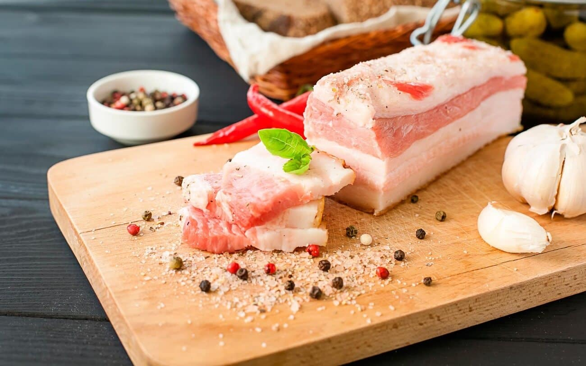

Сало
Склад інгредієнтів:
- Сало свиняче - 500 г
- Часник - 3 зубчики
- Сіль - за смаком
- Чорний перець - за смаком
Інструкції з приготування:
- Свиняче сало розрізати на шматочки товщиною близько 1 см.
- Часник дрібно порізати.
- Посипати сало сіллю та чорним перцем.
- Додати порізаний часник та перемішати.
- Покласти сало в контейнер та залишити на 2-3 дні в холодильнику, щоб настоялося.
- Подаємо з хлібом та гарніруємо зеленню.